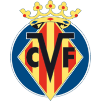

CHAMPIONS / LIVERPOOL 2 - VILLARREAL 0
Liverpool tiene un pie en la final
El equipo de Klopp le ganó con comodidad al Villarreal y es candidatazo para estar en la final. Rulli, Foyth y Lo Celso poco pudieron hacer ante el poderío inglés.

Fue un cómodo 2-0.
LIVERPOOL
2 vs 0
VILLARREAL
Pervis Estupiñán 8' ST (GC) Sadio Mané 10' ST
Champions League / Semi-Finales / 27 de Abril - 16:00h. / Szymon Marciniak / Anfield
La incógnita no era el cómo sino cuándo. Tan delgado era el margen de error del Villarreal contra el Liverpool, que era apenas una cuestión de tiempo encontrarlo en desventaja. Porque en Anfield, el Submarino Amarilla apenas pudo conservar la pelota un par de segundos por jugada ante un equipo de Klopp que ejecutó una presión asfixiante durante todo el partido. Aguantó un tiempo la Cenicienta de estas semifinales de Champions. Tras el descanso, el muro no aguantó las grietas y se terminó cayendo.En España quedará el mal trago de que el 1-0, a los ocho minutos del segundo tiempo, fue por una carambola. Porque Henderson mandó un centro que se desvió en Estupiñán e hizo estéril el manotazo de Rulli., Fue gol en contra del ecuatoriano, pero una consecuencia de todo lo que había hecho el Liverpool.
El plantel defensivo del Villarreal
Con demasiada diferencia de jerarquía individual y colectiva, Villarreal intentó emular lo que el Atlético de Simeone había hecho contra el City (0-1), en la ida de los cuartos.Acumuló mucha gente atrás para disminuir el poder de gol de su rival y llegar con vida al partido de vuelta. El primer tiempo le salió bien, porque salvo jugadas muy aisladas, el dominio inglés no se tradujo en chances claras. Apenas una mediavuelta de Mané y un remate de media distancia de Thiago que dio en un ángulo sacudieron a Rulli, de nivel aceptable.
Pero para lograr esto, los de Emery decididamente entregaron el ataque. Con dos líneas de cuatro bien marcadas, Lo Celso fue un volante por derecha dedicado a clausurar su banda y casi nunca pudo agarrar la pelota. Quedó claro que el plan original era que en ataque se cerrara y jugara de enganche, pero la presión rival se lo impidió.
Es tan alta la exigencia y perfección que demanda el Liverpool, que apenas Villarreal se desconectó del partido lo lastimó. Dos minutos después del gol en contra, y todavía mareado, llegó el 2-0. Asistencia de Salah con caño incluido y definición mano a mano de Mané.
Si bien pudieron ser tres o cuatro goles, los de Klopp se conformaron con los dos de ventaja. Si bien quedan 90 minutos, la serie parecería estar casi cerrada.
Resumen del partido
Alineaciones
| Liverpool | ||
|---|---|---|
| 1 | Alison | Arq |
| 66 | Alexander Arnold |
Def |
| 5 | Ibrahima Konaté | Def |
| 4 | Virgil Van Dijk |
Def |
| 26 | Andrew Robertson | Def |
| 14 | Jordan Henderson |
Med |
| 3 | Fabinho Tavares | Med |
| 6 | Thiago Alcántara | Med |
| 11 | Mohamed Salah | Del |
| 10 | Sadio Mané |
Del |
| 23 | Luis F. Díaz |
Del |
| Suplentes | ||
| 8 | Naby Keita |
Sup |
| 12 | Joe Gomez |
Sup |
| 20 | Diogo Jota |
Sup |
| 27 | Divock Origi |
Sup |
| Director Técnico | ||
| - | Jürgen Klopp | DT |
| Villarreal | ||
|---|---|---|
| 13 | Gerónimo Rulli | Arq |
| 12 | Pervis Estupiñán |
Def |
| 4 | Pau Torres | Def |
| 3 | Raúl Albiol | Def |
| 8 | Juan Foyth | Def |
| 19 | Francis Coquetín |
Med |
| 5 | Dani Parejo |
Med |
| 6 | Étienne Capoue | Med |
| 17 | Giovanni Lo Celso |
Med |
| 15 | Arnaut Groenveld |
Del |
| 11 | Samuel Chukwueze |
Del |
| Suplentes | ||
| 9 | Paco Alcácer |
Sup |
| 14 | Manu Trigueros |
Sup |
| 16 | Boulaye Día |
Sup |
| 24 | Alfonso Pedraza Sag |
Sup |
| 25 | Serge Aurier |
Sup |
| Director Técnico | ||
| - | Unal Emery Etxegoien | DT |
| Cronología | ||
|---|---|---|
| 90+5' | Final del partido. Liverpool 2, Villarreal 0. | |
| 86' | Sustitución en Villarreal. Sale Arnaut Groenveld (delantero #15), entra Paco Alcácer (delantero #9). | |
| 81' | Sustitución en Liverpool. Sale Luis F. (delantero #23), entra Divock Origi (delantero #27). | |
| 81' | Sustitución en Liverpool. Sale Alexander Arnold (defensor #66), entra Joe Gómez (defensor #12). | |
| 73' | Sustitución en Liverpool. Sale Jordan Henderson (mediocampista #14), entra Naby Keita (mediocampista #8). | |
| 72' | Sustitución en Liverpool. Sale Sadio Mané (delantero #10), entra Diogo Jota (delantero #20). | |
| 72' | Sustitución en Villarreal. Sale Samuel Chukwueze (delantero #11), ingresa Boulaye Dia (delantero #16). | |
| 72' | Sustitución en Liverpool. Sale Jordan Henderson (mediocampista #14), entra Naby Keita (mediocampista #8). | |
| 72' | Sustitución en Villarreal. Se retira Pervis Estupiñán (defensor #12), entra Manu Trigueros (mediocampista #14). | |
| 71' | Sustitución en Villarreal. Se retira Dani Parejo (Mediocampista #5), entra Serge Aurier (defensor #25). | |
| 66' | Zapatazo de Van Dijk. Casi marca el central neerlandés con un disparo mortal desde la frontal. Estaba atento Rulli para despejar el peligro. | |
| 63' | No vale el gol de Robertson. Jugada invalidada por fuera de juego del lateral escocés, que bate a Rulli tras un espectacular centro de Alexander Arnold. Estaba muy bien diseñada la línea defensiva del Villarreael. | |
| 62' | Tarjeta amarilla para Giovanni Lo Celso por una falta sobre Robertson. | |
| 57' | Se produce el primer cambio en el Villarreal tras los dos goles del Liverpool. Entra Alfonso Pedraza Sag (mediocampista #24) en lugar de Francis Coquelin (mediocampista #19). | |
| 55' | Gol de Sadio Mané. Liverpool 2 - 0 Villarreal. Sané tira de calidad para aumentar la ventaja de los 'Reds'. Recibe Salah en la frontal y el egipcio, con tiempo para girar y encontrar espacio, filtra un espectacular pase a su socio en ataque. El delantero senegalés tiene sangre fría para realizar un leve toque que supera a Rulli por bajo. | |
| 53' | Autogol de Pervis Estupiñán. Liverpool 1 - 0 Villarreal. | |
| 52' | Bloqueo de Rulli. No consigue dar dirección ni potencia al balón Luis Díaz con un remate en el corazón del área. Se lamenta el jugador colombiano. | |
| 49' | Gol anulado al Liverpool. Hay fuera de juego de Fabinho cuando alcanzaba el esférico tras un toque de Van Dijk dentro del área. Acierta el colegiado polaco Marciniak. | |
| 47' | Amarilla para Pervis Estupiñán por agarrar del brazo a Mohamed Salah. Hay tiro libre a favor del Liverpool muy cerca del pico del área. | |
| 46' | La primera de la segunda parte la tiene el Liverpool. Centro de Salah buscando a Mané, pero aparece Pau Torres para desviar la trayectoria del lanzamiento y habilitar el blocaje de Rulli. | |
| 45' | Final primer tiempo. Liverpool 0, Villarreal 0. | |
| 41' | Balonazo extraordinario de Thiago Alcántara, que le pega desde fuera del área y encuentra el poste de Rulli. Por poco no se inaugura el marcador en Anfield. | |
| 35' | Primera chance para el Villarreal. Aparición sorprendente de Lo Celso, que se tiró para tocar un lanzamiento en largo de Parejo. Aplaude desde la banda Unai Emery | |
| 34' | En solo tres toques, el Liverpool transporta la pelota desde el centro del campo al corazón del área. Engancha el egipcio un remate de primeras a un centro de Alexander Arnold, mandando el balón por encima del travesaño. | |
| 32' | Chance de gol para Liverpool. Disparo potente de Mané que desvía en Albiol y casi engaña a Rulli. Totalmente de espalda a la portería contraria, el senegalés se giró y encontró espacio para el tiro. | |
| 32' | Tarjeta amarilla para Virgil Van Dijk por falta. La primera cartulina del encuentro la ve un jugador del Liverpool. | |
| 30' | Intenta de lejos Luis Díaz y su disparo lo despeja el portero del Villarreal. Sigue picando piedra el Liverpool. | |
| 28' | Le pega con fuerza Alexander Arnold, pero su disparo no puede superar la fila de futbolistas colocada por Rulli. Mete la cabeza con valentía Pau Torres. | |
| 26' | Otra jugada combinativa entre Mané y Salah que termina con un tiro de rosca del egipcio que se marcha por encima de la portería. | |
| 21' | Perfecto lanzamiento de Fabinho a Henderson, cuyo centrochut de primeras desde la derecha toca el poste de Rulli y se marcha fuera. Lo tenía controlado el portero del Villarreal | |
| 15' | Disparo desde la frontal de Henderson que termina anulando el asistente por posición antirreglamentaria de los jugadores del Liverpool, que le tapaban la visión a Rulli. | |
| 13' | Jugadón de Luis Díaz. El colombiano recorta hacia adentro y encuentra espacio para rematar desde lejos, pero su disparo lo detiene el portero del Villarreal. Sigue mordiendo arriba el equipo de Klopp. | |
| 11' | Conexión entre Salah y Mané que termina con un cabezazo forzado del senegalés. No lo hace bien Mané a la hora de rematar por alto. | |
| 9' | ¡La primera del Liverpool! Remate de cabeza de Salah, tras un centro de Alexander Arnold al primer palo. Presiona el cuadro británico en estos primeros 10' de encuentro. | |
| Arrancó el partido. Inicio primer tiempo. |
COMENTARIOS
Comentar las notas de Sportia es exclusivo para usuarios logueados.